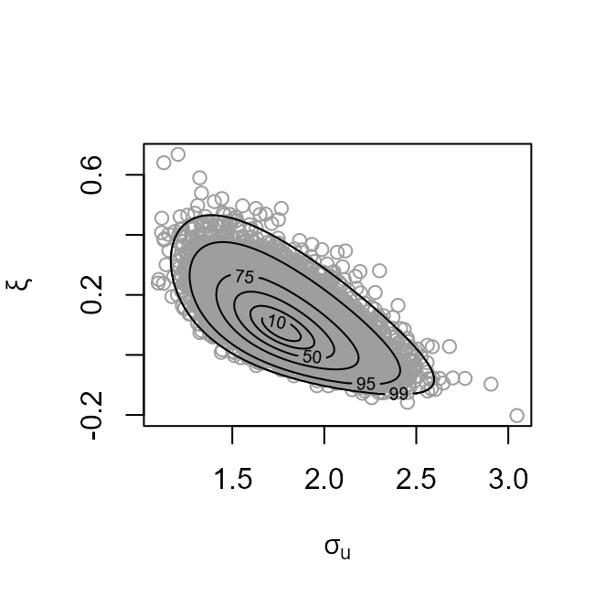

vignettes/threshr-vignette.Rmd
threshr-vignette.RmdThe threshr package deals primarily with the selection of thresholds for use in extreme value modelling. The underlying methodology is described in detail in Northrop, Attalides, and Jonathan (2017). Bayesian leave-one-out cross-validation is used to compare the extreme value predictive performance resulting from each of a set of thresholds. This assesses the trade-off between the model mis-specification bias that results from an inappropriately low threshold and the loss of precision of estimation from an unnecessarily high threshold. There many other approaches to address this bias-variance trade-off. See Scarrott and MacDonald (2012) for a review.
At the moment only the simplest case, where the data can be treated as independent identically distributed observations, is considered. In this case the model used is a combination of a binomial distribution for the number of exceedances of a given threshold and a generalized Pareto (GP) distribution for the amounts, the threshold excesses by which exceedances lie above a threshold. We refer to this as a binomial-GP model. Future releases of threshr will tackle more general situations.
We use the function ithresh to compare the predictive performances of each of a set of user-supplied thresholds. We also perform predictive inferences for future extreme values, using the predict method for objects returned from ithresh. These inferences can be based either on a single threshold or on a weighted average of inferences from multiple thresholds. The weighting reflects an estimated measure of the predictive performance of the threshold and can also incorporate user-supplied prior probabilities for each threshold.
A traditional simple graphical method to inform threshold selection is to plot estimates of, and confidence intervals for, the GP shape parameter \(\xi\) over a range of thresholds. This plot is used to choose a threshold above which the underlying GP shape parameter may be approximately constant. See Chapter 4 of Coles (2001) for details. Identifying a single threshold using this method is usually unrealistic but the plot can point to a range of thresholds that merit more sophisticated analysis. The threshr function stability produces this type of plot.
We provide a brief outline of the methodology underlying ithresh. For full details see Northrop, Attalides, and Jonathan (2017). Consider a set of training thresholds \(u_1, \ldots, u_k\). The validation threshold \(v = u_k\) defines validation data: indicators of whether or not an observation exceeds \(v\) and, if it does, the amount by which \(v\) is exceeded. For a given training threshold leave-one-out cross-validation estimates the quality of predictive inference for each of the individual omitted samples based on Bayesian inferences from a binomial-GP model. Importance sampling is used to reduce computation time: only two posterior samples are required for each training threshold. Simulation from the posterior distributions of the binomial-GP parameters is performed using the revdbayes package (Northrop 2017).
In the first release of threshr the binomial probability is assumed to be independent of the parameters of the GP distribution a priori. This will be relaxed in a later release. The user can choose from a selection of in-built prior distributions and may specify their own prior for GP models parameters. By default the Beta(1/2, 1/2) Jeffreys’ prior is used for the threshold exceedance probability of the binomial distribution and a generalization of the Maximal Data Information (MDI) prior is used for the GP parameters. See the documentation of ithresh and Northrop, Attalides, and Jonathan (2017) for details of the latter.
We use the storm peak significant wave heights datasets analysed in Northrop, Attalides, and Jonathan (2017) from the Gulf of Mexico (gom, with 315 observations) and the northern North Sea (ns, with 628 observations) to illustrate the code. There should be enough exceedances of the validation threshold \(v = u_k\) to enable the predictive performances of the training thresholds to be compared. Jonathan and Ewans (2013) recommend that when making inferences about a GP distribution there should be no fewer than 50 exceedances. We bear this rule-of-thumb in mind when setting the vectors of training thresholds below.
library(threshr) # Set the size of the posterior sample simulated at each threshold n <- 10000 ## North Sea significant wave heights # Set a vector of training thresholds u_vec_ns <- quantile(ns, probs = seq(0.1, 0.85, by = 0.05)) # Compare the predictive performances of the training thresholds ns_cv <- ithresh(data = ns, u_vec = u_vec_ns, n = n) ## Gulf of Mexico significant wave heights # Set a vector of training thresholds u_vec_gom <- quantile(gom, probs = seq(0.1, 0.8, by = 0.05)) # Compare the predictive performances of the training thresholds gom_cv <- ithresh(data = gom, u_vec = u_vec_gom, n = n)
The default plot method for objects returned by ithresh is of the estimated measures of predictive performance, normalized to sum to 1, against training threshold. See equations (7) and (14) of Northrop, Attalides, and Jonathan (2017).
plot(ns_cv, lwd = 2, cex.axis = 0.8) mtext("North Sea : significant wave height / m", side = 3, line = 2.5) plot(gom_cv, lwd = 2, cex.axis = 0.8) mtext("Gulf of Mexico: significant wave height / m", side = 3, line = 2.5)
The summary method identifies which training threshold is estimated to perform best.
summary(ns_cv) #> v v quantile best u best u quantile index of u_vec #> 1 5.6972 85 2.204 25 4 summary(gom_cv) #> v v quantile best u best u quantile index of u_vec #> 1 4.607 80 3.3878 60 11
The plot method can also produce a plot of the posterior sample of the GP parameters generated using a training threshold chosen by the user, e.g. the argument which_u = 5 specifies the fifth element of the vector of training thresholds, or using the best threshold, as below.
# Plot of Generalized Pareto posterior sample at the best threshold # (based on the lowest validation threshold) plot(ns_cv, which_u = "best") plot(gom_cv, which_u = "best")

Let \(M_N\) denote the largest value to be observed in a time period of length \(N\) years. The predict method for objects returned from ithresh performs predictive inference for \(M_N\) based either on a single training threshold or on a weighted average of inferences from multiple training thresholds.
By default the threshold that is estimated to perform best is used. A different threshold can be selected using the argument which_u. Using type = "d" produces the predictive density function. The values of \(N\) can be set using n_years. The default is \(N = 100\).
This option is selected using which_u = "all". The user can specify a prior probability for each threshold using u_prior. The default is that all thresholds receive equal prior probability, in which case the weights applied to individual training thresholds are those displayed in the threshold diagnostic plot above. The default, type = "p" produces the predictive distribution function. If which_u = "all" then n_years must have length one. The default is \(N = 100\).
### All thresholds plus weighted average of inferences over all thresholds all_p <- predict(gom_cv, which_u = "all") plot(all_p)
As we expect, the estimated distribution function obtained by the weighted average over all thresholds lies between the pointwise envelope of the curves of the individual thresholds.
Coles, S. G. 2001. An Introduction to Statistical Modelling of Extreme Values. London: Springer.
Jonathan, P., and K. Ewans. 2013. “Statistical Modelling of Extreme Ocean Environments for Marine Design : A Review.” Ocean Engineering 62: 91–109. https://doi.org/10.1016/j.oceaneng.2013.01.004.
Northrop, P. J. 2017. revdbayes: Ratio-of-Uniforms Sampling for Bayesian Extreme Value Analysis. https://CRAN.R-project.org/package=revdbayes.
Northrop, P. J., N. Attalides, and P. Jonathan. 2017. “Cross-Validatory Extreme Value Threshold Selection and Uncertainty with Application to Ocean Storm Severity.” Journal of the Royal Statistical Society: Series C (Applied Statistics) 66 (1): 93–120. https://doi.org/10.1111/rssc.12159.
Scarrott, C., and A. MacDonald. 2012. “A Review of Extreme Value Threshold Estimation and Uncertainty Quantification.” REVSTAT - Statistical Journal 10 (1): 33–60. https://www.ine.pt/revstat/pdf/rs120102.pdf.